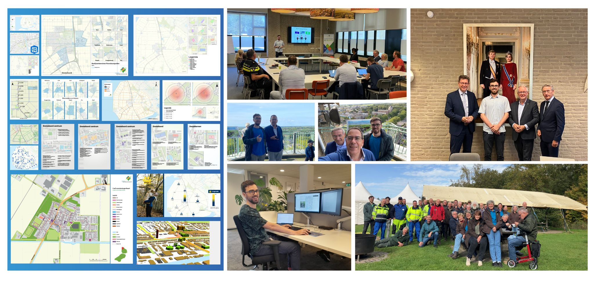

Gemeente Noordoostpolder
Halfjaar impact maken in de Gemeente NOP
Een halfjaar bij de Gemeente Noordoostpolder geeft veel inzicht in de praktische toepassing van GIS, ervaringen met de ontwikkeling van een geoportaal en samenwerkingen. In een tijdspan van zes maanden ben ik als student ontvangen in een warm bad. Collega's stonden open voor samenwerkingen en het geven van feedback. Na deze mooie periode mocht ik ook de kans krijgen hier verder te gaan als GIS-medewerker ter ondersteuning. Hier zijn de 3 belangrijkste punten die ik geleerd heb en eventueel jouw proces kunnen verbeteren.
Productaanvragen
Het belangrijkste wat ik mocht meenemen was de verbinding tussen het geo product en de klant aanvraag. Waar ligt de vraag en waarom? Hierdoor kunnen we ook toekomstgerichte toepassingen aanbieden. Door onderscheid te maken tussen urgentie en vragen van de behoeften ontstaat er meer ruimte voor inzicht in de daadwerkelijke behoeften die spelen in of buiten je organisatie.
Zorgvuldigheid
Gemeenten hebben als organisaties meer belang bij de zorgvuldigheid in de communicatie met burgers en medewerkers, omdat reputatie geschaad kan worden bij slechte communicatie. Hierom is het beter zorgvuldiger te werken en meer controles uit te voeren.
Prioriteiten stellen
Door prioriteiten te stellen kun je meer impact maken als organisatie. Een mooi voorbeeld hoe je dit kan implementeren is de MoSCoW methode, waarbij je onderscheid maakt tussen Must have, Should have, Could have en Won't have. Hierdoor kan je ook beter prioriteiten stellen en de klant beter bedienen.
Momenteel ben ik nog steeds werkzaam bij de gemeente Noordoostpolder als GIS-medewerker, waar ik mijn kennis en ervaring verder kan ontwikkelen en toepassen. Ik ben dankbaar voor de kansen die ik heb gekregen en kijk uit naar wat de toekomst brengt in mijn carrière als GIS-professional.
